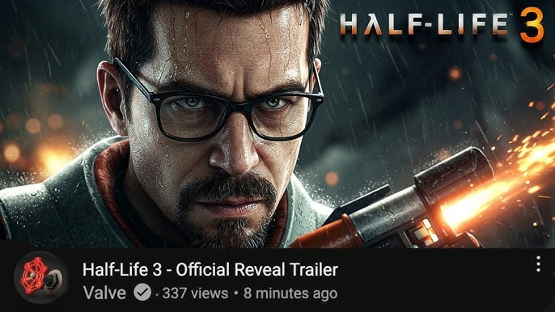
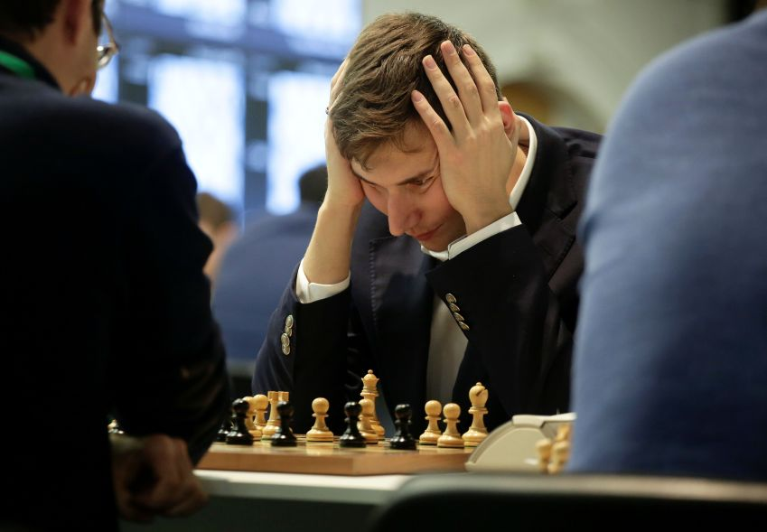

Projetos
Grand Theft Auto VI

O maior lançamento da história dos jogos, redefinindo o mundo aberto com gráficos absurdos, IA avançada e um mapa gigantesco inspirado na Flórida.
Half Life 3

A continuação lendária que finalmente encerrou décadas de espera trazendo uma revolução narrativa e tecnológica para os jogos de FPS.
Xadrez 2

A sequência inesperada do xadrez clássico que adicionou novas peças, habilidades especiais e destruiu amizades competitivas em minutos.